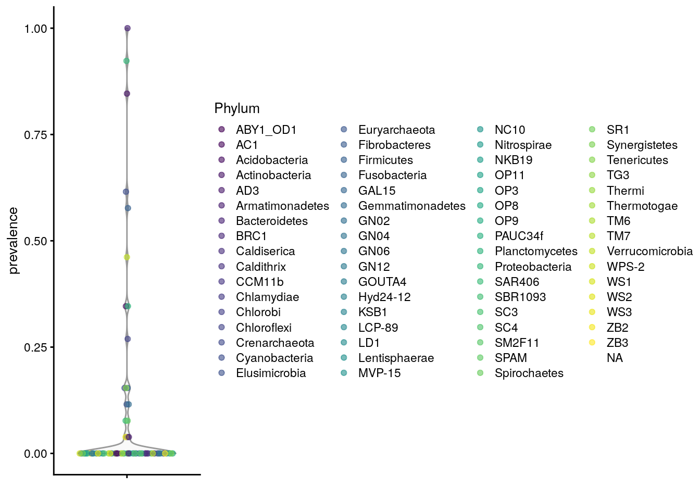
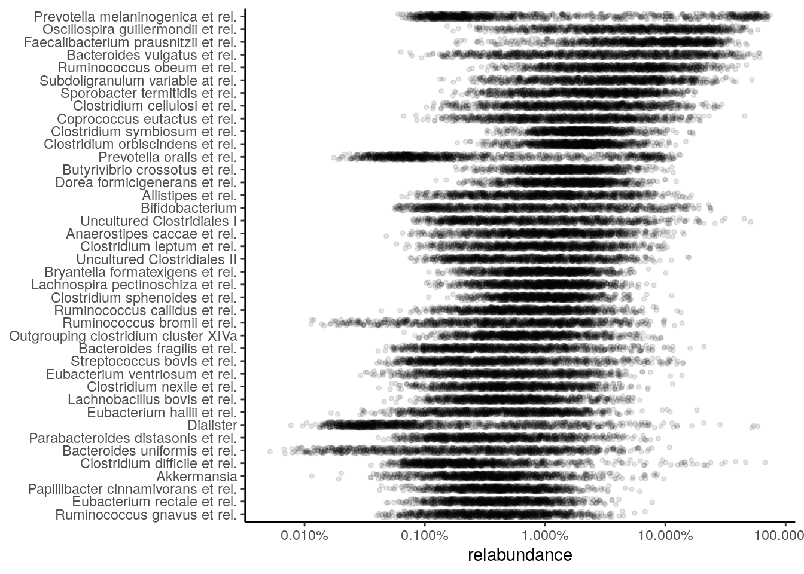
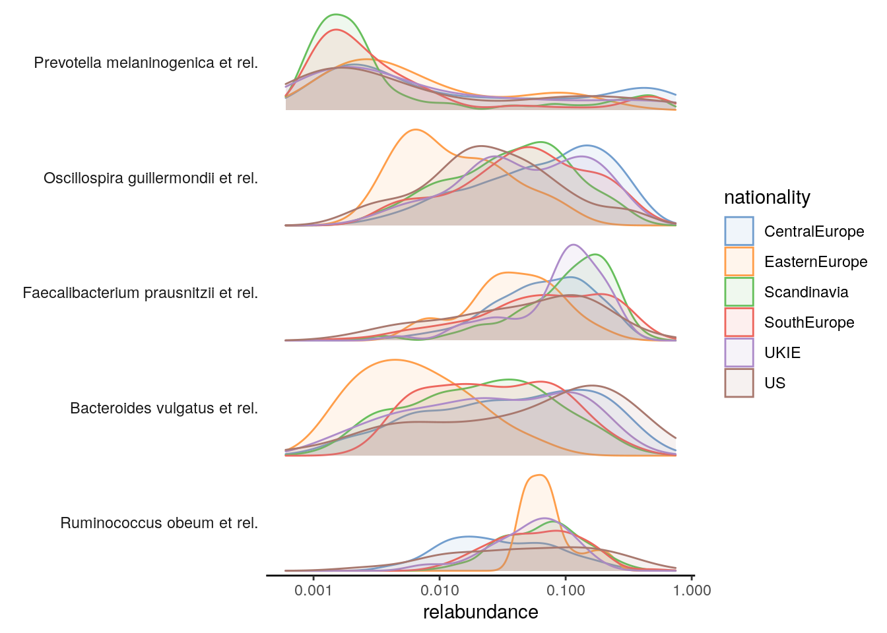

Chapter 7 Microbiome Exploration
This chapter focuses on the exploration of microbiome data and establishes commonly used descriptors of a microbiome. The main difference to quality control is that the exploration assumes that technical aspects of the dataset have been investigated to your satisfaction. Generally speaking, at this point you should be quite certain that the dataset doesn’t suffer from severe technical biases, or you should at least be aware of potential problems.
In reality you might need to go back and forth between QC and exploration, since you discover through exploration of your dataset technical aspects you need to check.
library(mia)
data("GlobalPatterns", package="mia")
se <- GlobalPatterns 7.1 Prevalence
Prevalence is a measurement, which describes in how many samples certain microbes were detected.
Investigating the prevalence of microbes allows you either to focus on changes, which pertain to most of the samples, or to focus on less often found microbes, which are nonetheless abundantly found in a small number of samples.
On the raw data, the population prevalence (frequency) at a 1% relative
abundance threshold (detection = 1/100 and as_relative = TRUE), can look
like this. The low prevalence in this example can be explained by rather
different sample types as well as the in-depth nature of the data.
head(getPrevalence(se, detection = 1/100, sort = TRUE, as_relative = TRUE))## 331820 158660 98605 326977 145149 114821
## 0.2308 0.2308 0.1923 0.1923 0.1538 0.1538The detection and as_relative can also be used to access, how many samples
do pass a threshold for raw counts. Here the population prevalence (frequency)
at the absolute abundance threshold (as_relative = FALSE) at read count 1
(detection = 1) is accessed.
head(getPrevalence(se, detection = 1, sort = TRUE, abund_values = "counts",
as_relative = FALSE))## 145149 114821 108747 526804 98605 180658
## 1 1 1 1 1 1Note that, if the output should be used for subsetting or storing the data in
the rowData, set sort = FALSE.
7.1.1 Prevalent microbiota analysis
To investigate the microbiome data at a selected taxonomic level, two approaches are available.
First the data can be agglomerated to the taxonomic level and getPrevalence
be used on the result.
altExp(se,"Phylum") <- agglomerateByRank(se, "Phylum")
head(getPrevalence(altExp(se,"Phylum"), detection = 1/100, sort = TRUE,
abund_values = "counts", as_relative = TRUE))## Phylum:Bacteroidetes Phylum:Proteobacteria Phylum:Actinobacteria
## 1.0000 0.9231 0.8462
## Phylum:Cyanobacteria Phylum:Firmicutes Phylum:Verrucomicrobia
## 0.6154 0.5769 0.4615Alternatively, the rank argument can be set to perform the agglomeration on
the fly.
altExp(se,"Phylum") <- agglomerateByRank(se, "Phylum")
head(getPrevalence(se, rank = "Phylum", detection = 1/100, sort = TRUE,
abund_values = "counts", as_relative = TRUE))## Bacteroidetes Proteobacteria Actinobacteria Cyanobacteria Firmicutes
## 1.0000 0.9231 0.8462 0.6154 0.5769
## Verrucomicrobia
## 0.4615The difference in the naming scheme is that, by default, na.rm = TRUE is used
for agglomeration in getPrevalence, whereas the default for
agglomerateByRank is FALSE to prevent accidental data loss.
If you only need the names of the prevalent taxa, getPrevalentTaxa is
available. This returns the taxa that exceed the given prevalence and detection
thresholds.
getPrevalentTaxa(se, detection = 0, prevalence = 50/100)
prev <- getPrevalentTaxa(se, detection = 0, prevalence = 50/100,
rank = "Phylum", sort = TRUE)
prevNote that the detection and prevalence thresholds are not the same, since
detection can be applied to relative counts or absolute counts depending on
whether as_relative is set TRUE or FALSE
TODO See also related functions for the analysis of rare and variable taxa (rareMembers; rareAbundance; lowAbundance).
7.1.2 Plotting prevalence
To plot the prevalence, the data is first added to the rowData.
rowData(altExp(se,"Phylum"))$prevalence <-
getPrevalence(altExp(se,"Phylum"), detection = 1/100, sort = FALSE,
abund_values = "counts", as_relative = TRUE)Then it can be plotted via the plotting functions from the scater package.
library(scater)
plotRowData(altExp(se,"Phylum"), "prevalence", colour_by = "Phylum")
Additionally, the prevalence can be plotted on the taxonomic tree using the
miaViz package.
altExps(se) <- splitByRanks(se)
altExps(se) <-
lapply(altExps(se),
function(y){
rowData(y)$prevalence <-
getPrevalence(y, detection = 1/100, sort = FALSE,
abund_values = "counts", as_relative = TRUE)
y
})
top_phyla <- getTopTaxa(altExp(se,"Phylum"),
method="prevalence",
top=10L,
abund_values="counts")
top_phyla_mean <- getTopTaxa(altExp(se,"Phylum"),
method="mean",
top=10L,
abund_values="counts")
x <- unsplitByRanks(se, ranks = taxonomyRanks(se)[1:6])
x <- addTaxonomyTree(x)After some preparation the data is assembled and can be plotted via
plotRowTree.
library(miaViz)
plotRowTree(x[rowData(x)$Phylum %in% top_phyla,],
edge_colour_by = "Phylum",
tip_colour_by = "prevalence",
node_colour_by = "prevalence")Figure 7.1: Prevalence of top phyla as judged by prevalence
plotRowTree(x[rowData(x)$Phylum %in% top_phyla_mean,],
edge_colour_by = "Phylum",
tip_colour_by = "prevalence",
node_colour_by = "prevalence")Figure 7.2: Prevalence of top phyla as judged by mean abundance
7.2 Abundance
Another approach for exploring data is by visualizing abundance. miaViz offers
the function plotAbundanceDensity where most abundant taxa can be plotted
including several options.
In the following few demonstrations are shown, using the (Lahti et al. 2014) dataset.
A Jitter plot based on relative abundance data, similar to the one presented at (Salosensaari et al. 2021) supplementary figure 1, could be visualized as follows:
# Loading data
library(microbiomeDataSets)
tse <- atlas1006()
# Counts relative abundances
tse <- transformSamples(tse, method = "relabundance")
plotAbundanceDensity(tse, layout = "jitter", abund_values = "relabundance",
n = 40, point_size=1, point_shape=19, point_alpha=0.1) +
scale_x_log10(label=scales::percent)
For instance, relative abundance values for the top 5 taxa can be visualized as a density plot over a log scaled axis, using “nationality” as an overlaying information:
plotAbundanceDensity(tse, layout = "density", abund_values = "relabundance",
n = 5, colour_by="nationality", point_alpha=1/10 ) +
scale_x_log10() ## Session Info {-}
R version 4.1.1 (2021-08-10)
Platform: x86_64-pc-linux-gnu (64-bit)
Running under: Ubuntu 20.04.3 LTS
Matrix products: default
BLAS/LAPACK: /usr/lib/x86_64-linux-gnu/openblas-pthread/libopenblasp-r0.3.8.so
locale:
[1] LC_CTYPE=en_US.UTF-8 LC_NUMERIC=C
[3] LC_TIME=en_US.UTF-8 LC_COLLATE=en_US.UTF-8
[5] LC_MONETARY=en_US.UTF-8 LC_MESSAGES=C
[7] LC_PAPER=en_US.UTF-8 LC_NAME=C
[9] LC_ADDRESS=C LC_TELEPHONE=C
[11] LC_MEASUREMENT=en_US.UTF-8 LC_IDENTIFICATION=C
attached base packages:
[1] stats4 stats graphics grDevices utils datasets methods
[8] base
other attached packages:
[1] microbiomeDataSets_1.1.5 MultiAssayExperiment_1.19.16
[3] miaViz_1.1.4 ggraph_2.0.5
[5] scater_1.21.8 ggplot2_3.3.5
[7] scuttle_1.3.1 mia_1.1.19
[9] TreeSummarizedExperiment_2.1.4 Biostrings_2.61.2
[11] XVector_0.33.0 SingleCellExperiment_1.15.2
[13] SummarizedExperiment_1.23.5 Biobase_2.53.0
[15] GenomicRanges_1.45.0 GenomeInfoDb_1.29.8
[17] IRanges_2.27.2 S4Vectors_0.31.5
[19] BiocGenerics_0.39.2 MatrixGenerics_1.5.4
[21] matrixStats_0.61.0-9001 BiocStyle_2.21.4
[23] rebook_1.3.1
loaded via a namespace (and not attached):
[1] AnnotationHub_3.1.6 BiocFileCache_2.1.1
[3] plyr_1.8.6 igraph_1.2.6
[5] lazyeval_0.2.2 splines_4.1.1
[7] BiocParallel_1.27.17 digest_0.6.28
[9] yulab.utils_0.0.4 htmltools_0.5.2
[11] viridis_0.6.2 fansi_0.5.0
[13] magrittr_2.0.1 memoise_2.0.0
[15] ScaledMatrix_1.1.0 cluster_2.1.2
[17] DECIPHER_2.21.0 graphlayouts_0.7.1
[19] colorspace_2.0-2 rappdirs_0.3.3
[21] blob_1.2.2 ggrepel_0.9.1
[23] xfun_0.26 dplyr_1.0.7
[25] crayon_1.4.1 RCurl_1.98-1.5
[27] jsonlite_1.7.2 graph_1.71.2
[29] ape_5.5 glue_1.4.2
[31] polyclip_1.10-0 gtable_0.3.0
[33] zlibbioc_1.39.0 DelayedArray_0.19.4
[35] BiocSingular_1.9.1 scales_1.1.1
[37] DBI_1.1.1 Rcpp_1.0.7
[39] xtable_1.8-4 viridisLite_0.4.0
[41] decontam_1.13.0 gridGraphics_0.5-1
[43] tidytree_0.3.5 bit_4.0.4
[45] rsvd_1.0.5 httr_1.4.2
[47] dir.expiry_1.1.0 ellipsis_0.3.2
[49] pkgconfig_2.0.3 XML_3.99-0.8
[51] farver_2.1.0 dbplyr_2.1.1
[53] CodeDepends_0.6.5 sass_0.4.0
[55] utf8_1.2.2 AnnotationDbi_1.55.1
[57] later_1.3.0 ggplotify_0.1.0
[59] tidyselect_1.1.1 labeling_0.4.2
[61] rlang_0.4.11 reshape2_1.4.4
[63] BiocVersion_3.14.0 munsell_0.5.0
[65] tools_4.1.1 cachem_1.0.6
[67] ExperimentHub_2.1.4 DirichletMultinomial_1.35.0
[69] generics_0.1.0 RSQLite_2.2.8
[71] evaluate_0.14 stringr_1.4.0
[73] fastmap_1.1.0 yaml_2.2.1
[75] ggtree_3.1.5 knitr_1.36
[77] bit64_4.0.5 tidygraph_1.2.0
[79] purrr_0.3.4 KEGGREST_1.33.0
[81] nlme_3.1-153 sparseMatrixStats_1.5.3
[83] mime_0.12 aplot_0.1.1
[85] compiler_4.1.1 png_0.1-7
[87] interactiveDisplayBase_1.31.2 curl_4.3.2
[89] beeswarm_0.4.0 filelock_1.0.2
[91] treeio_1.17.2 tibble_3.1.5
[93] tweenr_1.0.2 bslib_0.3.1
[95] stringi_1.7.5 highr_0.9
[97] lattice_0.20-45 Matrix_1.3-4
[99] vegan_2.5-7 permute_0.9-5
[101] vctrs_0.3.8 pillar_1.6.3
[103] lifecycle_1.0.1 BiocManager_1.30.16
[105] jquerylib_0.1.4 BiocNeighbors_1.11.0
[107] cowplot_1.1.1 bitops_1.0-7
[109] irlba_2.3.3 httpuv_1.6.3
[111] patchwork_1.1.1 R6_2.5.1
[113] promises_1.2.0.1 bookdown_0.24
[115] gridExtra_2.3 vipor_0.4.5
[117] codetools_0.2-18 MASS_7.3-54
[119] assertthat_0.2.1 withr_2.4.2
[121] GenomeInfoDbData_1.2.7 mgcv_1.8-38
[123] parallel_4.1.1 grid_4.1.1
[125] ggfun_0.0.4 beachmat_2.9.1
[127] tidyr_1.1.4 rmarkdown_2.11
[129] DelayedMatrixStats_1.15.4 ggnewscale_0.4.5
[131] ggforce_0.3.3 shiny_1.7.1
[133] ggbeeswarm_0.6.0